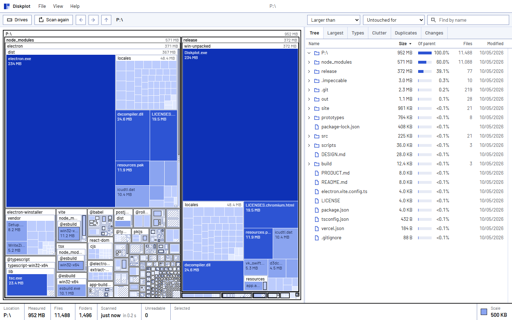
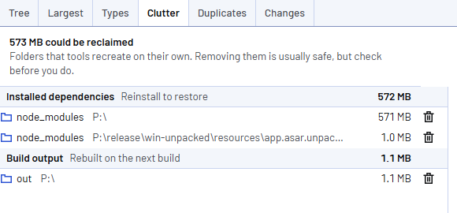

Analisador de espaço em disco para Windows.
O Diskplot escaneia uma unidade ou uma pasta e mostra o que está ocupando o espaço, em um treemap e em uma árvore ordenável na mesma janela.
Grátis e de código aberto, licença MIT. Windows 10 e 11. Sem conta, sem telemetria.
Treemap e árvore na mesma janela.
O treemap mostra as proporções de relance. A árvore dá tamanhos exatos, contagem de arquivos e datas, ordenável por qualquer coluna. A seleção é compartilhada: escolha um item em uma vista e ele é destacado na outra.

Recursos
Vista ao vivo
O treemap e a árvore vão sendo preenchidos enquanto o scan roda. Não é preciso esperar uma barra de progresso terminar.
Comparação de scans
Cada scan salva um pequeno retrato. O próximo scan do mesmo local lista o que cresceu, o que é novo e o que sumiu.
Detecção de tralha
Reconhece node_modules, saída de build, caches de gerenciadores de pacotes, ambientes virtuais, pastas temporárias e caches de navegador, e soma tudo.
Busca e filtros
Busca por nome no scan inteiro enquanto você digita. Filtros por tamanho mínimo, por idade e por tipo de arquivo.
Arquivos duplicados
Arquivos do mesmo tamanho são comparados pelo conteúdo. Roda sob demanda, não durante o scan.
Tamanho em disco
Os tamanhos são o espaço realmente alocado, então arquivos compactados, esparsos e de nuvem que estão só online contam pelo que ocupam.
Níveis de pasta
O treemap abre quatro níveis de pastas por padrão e desenha os mais fundos como um bloco só. O limite é ajustável.
Temas
Dois temas, cada um em claro e escuro. Inglês e português do Brasil.
Nada é apagado sem confirmação.
O que é removido vai para a Lixeira. Não há limpeza automática nem botão de resolver tudo.

Velocidade do scan
As pastas são listadas em lote pela API de diretórios do Windows, em paralelo em todos os núcleos. Não precisa de permissão de administrador.
| Escaneado | Arquivos | Pastas | Tempo |
|---|---|---|---|
| Uma pasta de projetos de código | 634.060 | 67.152 | 1,9 s |
| Um perfil de usuário | 2.148.709 | 574.860 | 10,0 s |
| Uma unidade de sistema inteira | 3.156.306 | 861.554 | 30 s |
Medido no desktop Windows 11 do autor, com o cache de arquivos quente. O primeiro scan depois de ligar o computador demora mais.
Comparado com outras ferramentas
WizTree
Lê a tabela de arquivos do NTFS direto, o que é mais rápido do que percorrer pastas, o Diskplot incluído. Exige permissão de administrador. Código fechado, com licença paga para uso comercial.
SpaceSniffer
Um treemap com atualização ao vivo. Gratuito, de código fechado. Não tem vista em árvore.
WinDirStat
Código aberto, com árvore e treemap colorido por tipo de arquivo. O Diskplot acrescenta a comparação de scans e a soma da tralha.
Perguntas
É grátis?
Sim. O Diskplot usa a licença MIT e pode ser usado em casa e no trabalho sem custo.
Precisa de permissão de administrador?
Não. Ele escaneia tudo o que a conta atual consegue ler. As pastas que não consegue abrir são contadas e listadas. Execute como administrador para incluí-las.
Por que os tamanhos são diferentes dos do Explorador de Arquivos?
O Diskplot mostra o espaço alocado no disco. Arquivos compactados, esparsos e arquivos do OneDrive que estão só online ocupam menos do que o tamanho indica. Um arquivo com vários hard links é contado uma vez por nome.
Ele envia dados para algum lugar?
Não. O único acesso à rede é ao GitHub, para verificar se existe uma versão mais nova.
Tem versão para macOS ou Linux?
Ainda não. Os sistemas suportados são Windows 10 e 11.